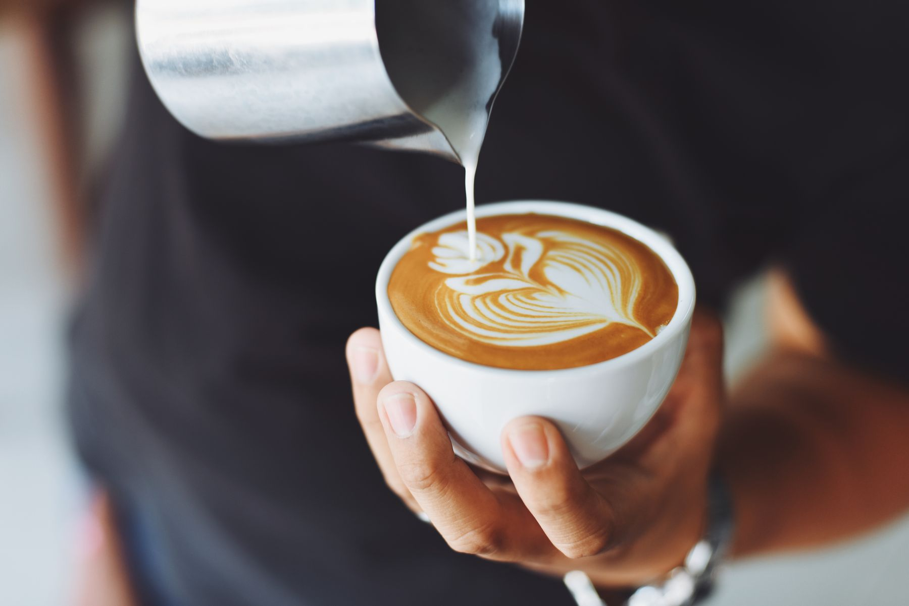

BEFORE / 修正前
余白珈琲
当店のホームページへようこそ
余白珈琲ではおいしいコーヒーとおやつをご用意しています。営業は10時から18時まで、水曜日は定休日です。メニューは余白ブレンド550円、カフェラテ620円です。お問い合わせは下記をご覧ください。

最新情報などは随時更新予定です。
お問い合わせはこちら04 / 部分修正・デザイン
サイトの一部分、告知バナー、名刺。
必要なところから整える制作の見本です。
参考料金：8,800円〜。以下はそれぞれ独立した制作例です。すべてを含むセット料金ではありません。修正箇所・サイズ・点数・納品形式を確認して見積もります。
01 / WEBSITE IMPROVEMENT
同じ店舗情報を使い、文字の大きさ・配置・連絡先への導線を改善した例です。
余白珈琲
当店のホームページへようこそ
余白珈琲ではおいしいコーヒーとおやつをご用意しています。営業は10時から18時まで、水曜日は定休日です。メニューは余白ブレンド550円、カフェラテ620円です。お問い合わせは下記をご覧ください。

最新情報などは随時更新予定です。
お問い合わせはこちら実在の店舗ではないため、店舗への問い合わせは受け付けていません。見本では、この位置から実際の連絡先へ案内する想定です。
営業時間・メニュー・連絡先を分け、探したい情報を見つけやすく。
本文と見出しに差をつけ、スマートフォンでも読みやすく。
問い合わせへのリンクを、押しやすいボタンへ変更。
03 / BUSINESS CARD
余白珈琲のショップカードを想定した、名刺サイズの両面デザインです。
表面
裏面
10:00–18:00
水曜定休
印刷用データの作成を想定した画面上の見本です。印刷代・配送費は別途。実際の入稿時には印刷会社のサイズ・塗り足し等の指定に合わせます。
LET’S MAKE IT CLEAR.
ページのURLや画像と、「ここを変えたい」をお送りください。
この内容で制作を相談する →